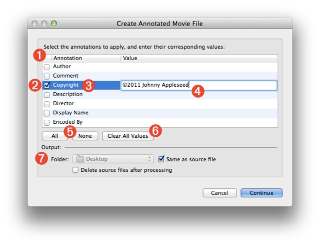
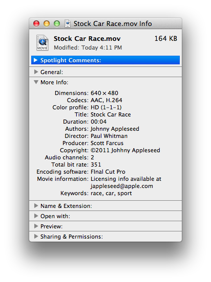
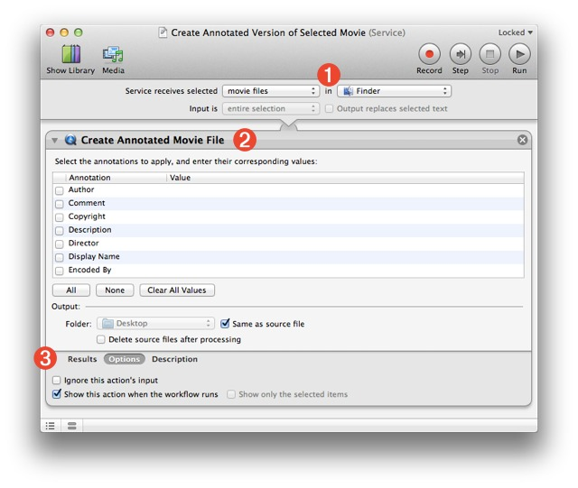
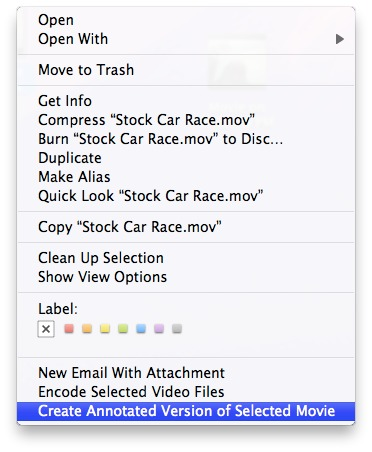

Create Annotated Movie File
An important aspect of creating video content for distribution, is the inclusion of metadata in generated media files. It is essential that information such as the author, copyright, and description, travel with the items and be readily accessible to those wishing to use the content. Mac OS X Lion provides a tool for quickly and easily creating versions of media content that will contain user-provided values for standard metadata tags.
The Create Annotated Movie File action can be used in the creation of Automator workflows or services for generating annotated movie files.
The Action Interface
The following outlines the parameters and settings controls available in the action view:
- The metadata titles and their values are displayed in a multi-column table (1).
- Select the check box (2) before the title of the annotation (3) you wish to embed in the created movie file.
- Double-click in the table cell to the right of the annotation title (4) to activate the cell and enter the text of the annotation value.

- The action has controls for selecting/deselecting all the annotations checkbxes (5) and a control for clearing all of the existing annotation values (6).
- The Output options (7) include controls for indicating the destination folder for the generated files and whether you want the source files deleted after they have been processed.
What it Does
The Create Annotated Movie File action accepts one or more video files as input and produces a movie file (MOV) version of each video file, containing embedded metadata, as a result. For example, the video file Stock Car Race.mpg
used as input to the action would produce the movie file Stock Car Race.mov
containing the metadata tag titles and values selected and entered in the action interface.

Note that movie files used as input (MOV) will produce movie files as output (MOV). For example, Home Run.mov
used as action input will produce an annotated version titled Home Run.mov
as output. However, if the destination folder chosen in the action interface is the same as the source file, the resulting file will have the same name as the source movie file but incremented, such as Home Run-1.mov
.
Use the Action in a Service
It's easy to create a desktop service for annotating selected video files. Simply launch Automator, create a new document using the Service template (click the gear icon), and set the service input controls at the top of the workflow window (1) to accept movies files in the Finder as input.
Search the Automator actions library for the Create Annotated Movie File action, and drag it into the workflow area (2).

If there annotations and values you want to be used by default, enter them in the table in the action view, otherwise leave the table blank and click the Options button at the bottom of the action view to access the control for making the action interface appear everytime the workflow service is executed (3).
Save and close the workflow. Next, Control-click one or more video files in the Finder to summon the Finder's contextual menu, a select your service from the menu options. The action interface will appear and you can enter the values you wish to apply to the selected video files.

 TRY IT YOURSELF! Download a zip archive of the service workflow shown above. To install, double-click the workflow file and click the Install button in the forthcoming dialog. Once installed, the service will be available from the Finder > Services menu, or the Finder's action or contextual menus.
TRY IT YOURSELF! Download a zip archive of the service workflow shown above. To install, double-click the workflow file and click the Install button in the forthcoming dialog. Once installed, the service will be available from the Finder > Services menu, or the Finder's action or contextual menus.